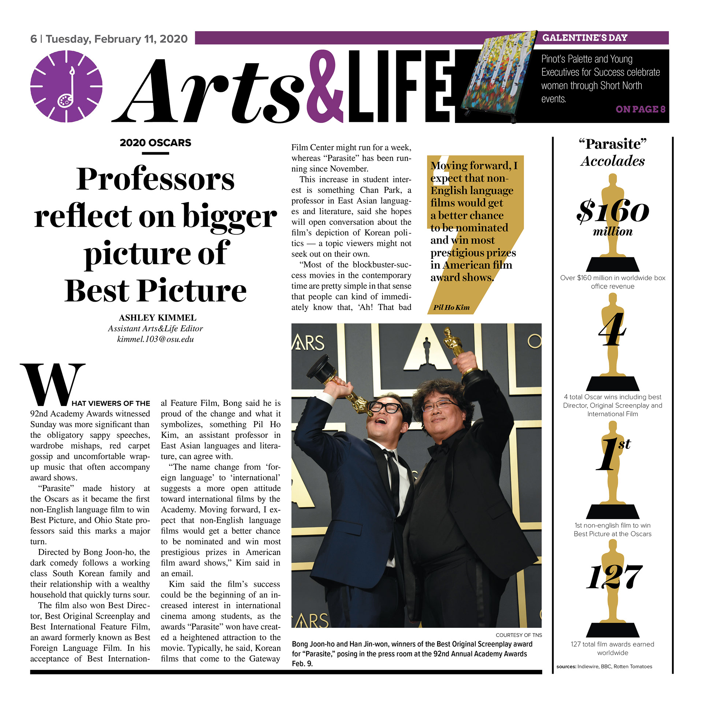

The Lantern Newspaper
As an assistant design editor in 2019 I realized that many of our layouts were becoming repetitive and cookie-cutter in addition to being text-heavy and gray. I worked with one of our advisors to rework a template that could elevate everyday designs without reducing our speed and efficiency during print nights.
The first spread is was the final prototype and it came to fruition for the first time in the form of the second spread.




Fisher Ink
Attempting to find my grounding at Ohio State, I joined a familiar setting and served as a designer for Fisher Ink Magazine for a semester.

Spark Newsmagazine
This is where my visual design journey all started, designing spreads for my high school newsmagazine using the Adobe Creative suite knowledge I taught myself.